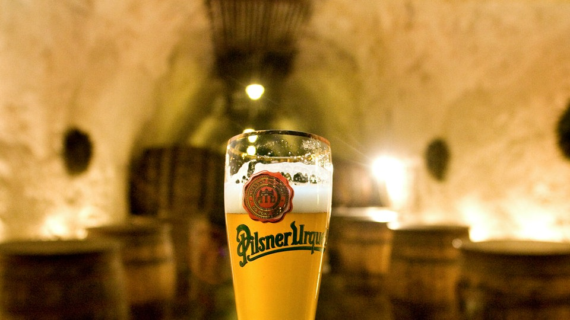

Die Entstehung des Pilsner Bieres
Pils(e)ner Bier, auch Pils oder Bier nach Pilsner Brauart, in der Schweiz Spezialbier, ist ein nach der böhmischen Stadt Pilsen benanntes, untergäriges Bier mit im Vergleich zu anderen Biersorten erhöhtem Hopfengehalt (und auch starkem Hopfenaroma) und höchstens 12,5 °P Stammwürzegehalt. Nach Pilsner Brauart hergestellte Biere bilden heute den Großteil der in Deutschland produzierten und verkauften Biere. Es wird häufig aus der Pilstulpe getrunken.
Reinheitsgebot
Zutaten
- Hopfen
- Malz
- Hefe
- Wasser
Andere Biersorten
Es gibt noch andere Biersorten. Klick die Links unten um mehr darüber zu erfahren: